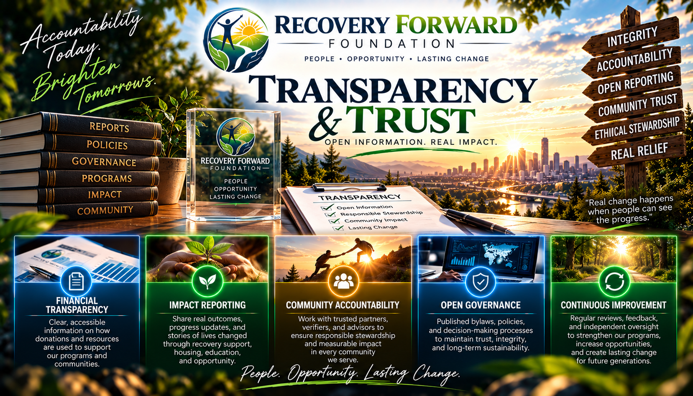

Governance
Foundation governance documents, board structure, organizational policies, and other appropriate public records can be published as they are formally adopted.
ACCOUNTABILITY • PRIVACY • TRUST
Recovery Forward Foundation is being built with accountability at its core. As the organization grows, this page will provide a public view into our governance, programs, grant activity, policies, and financial reporting.
ACCOUNTABILITY
People who seek assistance, volunteers, community partners, and donors should be able to understand how Recovery Forward Foundation operates and how resources are intended to be used.
Our transparency framework is being developed around responsible governance, documented decisions, privacy-conscious grant tracking, and clear program requirements.

Foundation governance documents, board structure, organizational policies, and other appropriate public records can be published as they are formally adopted.
Grant and assistance programs should have documented eligibility requirements, review procedures, authorization rules, and funding limitations.
Recovery Forward Foundation is developing a structured registry for tracking grant progress through defined stages without unnecessarily publishing applicants' personal information.
As financial activity develops, appropriate reports and disclosures can provide insight into funding received, program expenditures, grants, and organizational expenses.
Program milestones and grant approvals are being designed around documented verification and authorization procedures rather than informal or undocumented decisions.
Transparency does not mean exposing someone's recovery history. Public accountability should coexist with meaningful protection of applicant privacy.
RECOVERY GRANT REGISTRY
Recovery Forward Foundation is developing a privacy-conscious grant registry that uses unique RCGI identifiers instead of publicly identifying participants by name.
An application has entered the grant process.
Applicable recovery requirements have not yet completed the verification process.
Required milestone information has completed the applicable verification process.
Program requirements have been satisfied for eligibility consideration.
Assistance has received the required authorization under the applicable program.
An approved grant payment has been recorded through the applicable process.
PRIVACY MATTERS
A person's participation in recovery should not require their private history to become a public record.
The public-facing registry is being designed around random RCGI identifiers and program status information rather than unnecessary personal information such as names, Social Security numbers, home addresses, or private medical details.
Recovery Forward Foundation will never ask applicants to provide cryptocurrency passwords, wallet seed phrases, or private keys.
FOUNDATION STATUS
Recovery Forward Foundation is currently developing its programs, governance framework, application infrastructure, grant registry, and public accountability systems.
As formal documents, financial reports, program statistics, and grant activity become available, this transparency center can be expanded to publish appropriate information.
PUBLIC REPORTING
Adopted bylaws and appropriate organizational policies.
Aggregate application, eligibility, approval, and grant statistics without exposing applicant identities.
Appropriate financial reporting and required public filings as they become available.
Privacy-conscious information showing how foundation assistance is being put to work.
RECOVERY FORWARD FOUNDATION
Our goal is simple: help people move forward while building a foundation that participants, communities, and supporters can trust.